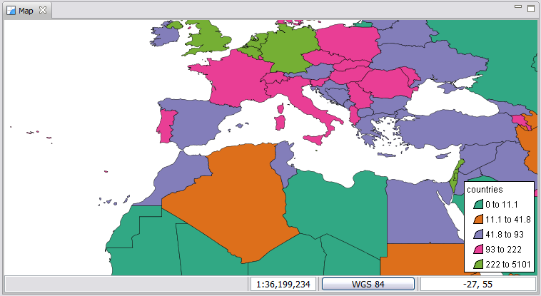

Legend Decoration¶
The Legend Decoration is used to provide an in map summary of the visible feature layers. It is able to look at your style and show categories of data.

The Legend Decoration is particularly useful when printing a map onto paper.
Style¶
You can change the Font Style of the Legend:

You can change the general style of the Legend:

You can change the Location style of the Legend:

Related reference